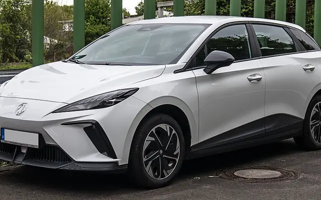

Par Motor › Precios por modelo › MG MG4
Precio de segunda mano · noviembre de 2026¿Cuánto vale un MG MG4 de segunda mano?

Precio justo estimado de un MG MG4 usado en España, año por año, con los kilómetros normales para su edad y en buen estado: de 16.300 € a 32.500 €. Para tasar el tuyo con sus kilómetros reales y su estado, usa el tasador gratis.
Precios del MG MG4 por año
MG4 (2022–hoy)
Precio de nuevo: Standard 170 CV, 30.000 € · Comfort 204 CV, 34.000 € · Luxury 245 CV, 38.000 €
| Año | Km normales | Standard 170 CV · Eléctrico | Comfort 204 CV · Eléctrico | Luxury 245 CV · Eléctrico |
|---|---|---|---|---|
| 2026 | 5.000 km | 25.700 € | 29.100 € | 32.500 € |
| 2025 | 20.000 km | 21.200 € | 24.000 € | 26.800 € |
| 2024 | 35.000 km | 19.400 € | 22.000 € | 24.600 € |
| 2023 | 50.000 km | 17.800 € | 20.100 € | 22.500 € |
| 2022 | 65.000 km | 16.300 € | 18.400 € | 20.600 € |
Kilómetros normales: 15.000 al año en gasolina, híbridos y eléctricos, y 20.000 en diésel, con un máximo de 100.000 km (por encima no tasamos: el precio depende demasiado del historial de cada coche). Cifras redondeadas a 100 €.
Preguntas frecuentes
¿Cuánto vale un MG MG4 de segunda mano?
Según el año, la versión y los kilómetros, un MG MG4 usado vale hoy de 16.300 € a 32.500 € en España. El más barato de nuestra tabla es un Standard de 2022 (16.300 €) y el más caro un Luxury de 2026 (32.500 €). Son precios justos estimados entre particulares y profesionales, con los kilómetros normales para su edad y en buen estado.
¿Cuánto valor pierde un MG MG4 al año?
Con unos años encima, un MG MG4 pierde alrededor de un 8 % de su valor cada año (calculado sobre el Standard de la generación MG4). Los primeros años la caída es mayor y a partir de los 70.000 km se acelera.
¿Qué motorizaciones tiene el MG MG4?
En nuestra base de datos hay versiones eléctrico, en 1 generación: MG4.
¿Cómo sé si me piden demasiado por un MG MG4?
Abre el tasador de Par Motor, elige el MG MG4, el año y los kilómetros reales, y escribe lo que te piden. Te diremos si está por debajo del precio justo (chollo) o por encima (caro). Es gratis y no pide registro ni matrícula.
Otros MG
Compara su coste real
El precio de compra es solo una parte. Mira cuánto te costaría al mes con combustible, seguro, neumáticos, mantenimiento y lo que pierde de valor.
Abrir el comparador →